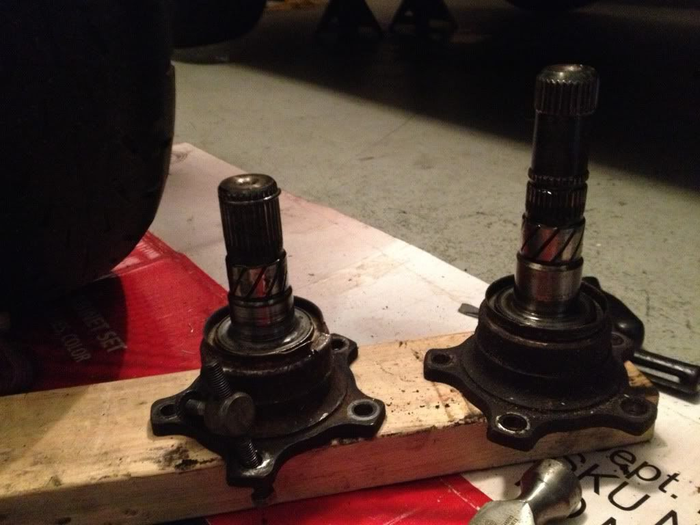
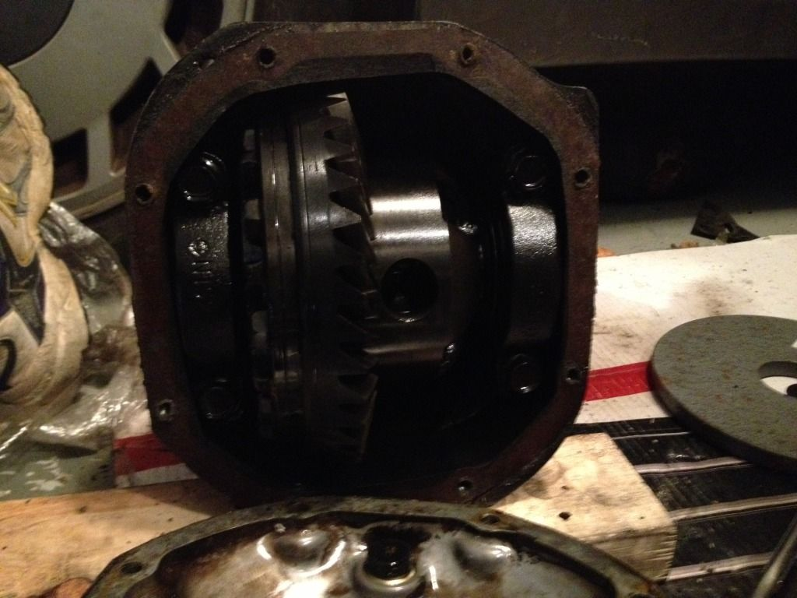
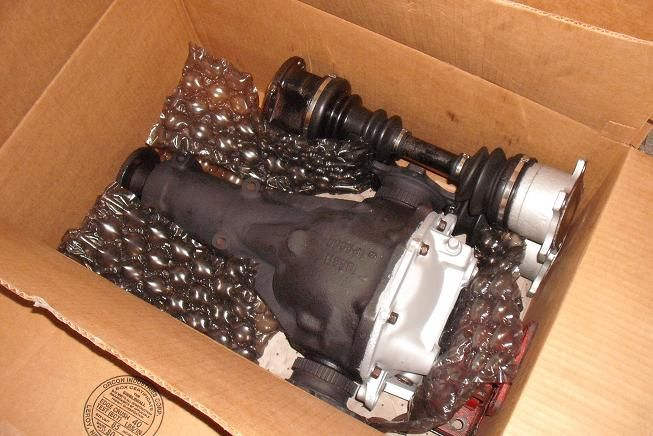

-
Ok so I bought a diff (assumed open diff) last year and have since been too busy to install it in my car. I get some time and to start the swap and realize I have actually recieved a LSD. I am assuming it's a SS but I don't know how to tell. Here are the stubs followed by a shot of the carrier. Sorry for the quality
the longer shaft to the right looks like it should have a snap ring but it does not. Am I wrong?

If this is indeed a SS VLSD can I make a hybrid axle for it using the following detailed write up? http://z31performance.com/showthread…-into-your-Z31
It seems as these people were using a J30 carrier and thus J30 axles. Is there a difference between the J30 carrier and the 88 SS? mainly worried about lenghts. And according the that page I would need the earlier J30, 5 bolt axle.
Thanks for the help and confirmation. I also have a WTB thread looking for the appropriate stock axles and would be willing to buy hybrid axels if someone has the time and would like to make some cash.87 300zx turbo ~600whp
Built motor, ported heads, stage 2 cams, oversized valves, gutted maxima plenum, etc, etc, etc..... -
That is the differential from a z32, not z31. And it is a VLSD, but not the same as the SS. -
It can not be a z32 diff because it is a long nose. Do you mean it is a z32 carrier? I thought the z32 input shafts had splines where the dust shields are on the these.87 300zx turbo ~600whp
Built motor, ported heads, stage 2 cams, oversized valves, gutted maxima plenum, etc, etc, etc..... -
Like these87 300zx turbo ~600whp
Built motor, ported heads, stage 2 cams, oversized valves, gutted maxima plenum, etc, etc, etc..... -

Well it's not an Shiro diff…It's a Z32 VLSD shoved into a R200 long nose. I made one o them half breed.
You're going have to make axles for that sucker.Cha iro
enjoy building it yourself.
if it fails, fuck it.
at least you gave it a whirl. -
Augustus you post (#5) and my post (#4) show the same style axle stub which we think comes from the Z32. The stubs in my possession post (#1) are different as you can tell from the base of the stub. Are you saying the Z32 had two different style stubs and mine are the other style? Guessing mine could also be J30.
If you guys are not looking at the stub to determine the identity of the diff then how do you come to this conclusion? I just don't know what to look for in difference between j30, SS, and z32.
Thanks87 300zx turbo ~600whp
Built motor, ported heads, stage 2 cams, oversized valves, gutted maxima plenum, etc, etc, etc..... -
J30, Z32 I'm sure they can interchange. Still not from SS. Where are you going to find axles for it.Cha iro
enjoy building it yourself.
if it fails, fuck it.
at least you gave it a whirl. -
I was going to see if I could find someone parting out a j30 as that is common but I wanted to make sure it would work. If I couldn't find a person parting out I'd have to go junk yard digging. Or as previously mentioned find pay someone to find and build them for me.87 300zx turbo ~600whp
Built motor, ported heads, stage 2 cams, oversized valves, gutted maxima plenum, etc, etc, etc..... -
The short nose VLSD unit is pretty much the same whatever it is from.
You have a Long-nose diff that has had a VLSD from a short nose fitted, best bet for you is to read Mike G's guide on making hybrid axles as all of this is explained in that thread.85 Turbo Slick Top
__________________________________________________ _____ -
Don't cut and weld them as he stated in one of his methods.Cha iro
enjoy building it yourself.
if it fails, fuck it.
at least you gave it a whirl.

Copyright © 2006–. All rights reserved. Privacy Policy